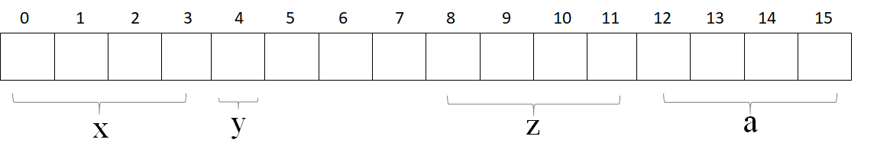

C++之基础语法
这是六则或许对你有些许帮助的信息:
⭐️1、阿秀与朋友合作开发了一个编程资源网站，目前已经收录了很多不错的学习资源和黑科技（附带下载地址），如过你想要寻求合适的编程资源，欢迎体验以及推荐自己认为不错的资源，众人拾柴火焰高，我为人人，人人为我🔥！
2、👉23年5月份阿秀从字节跳动离职跳槽到某外企期间，为方便自己找工作，增加上岸几率，我自己从0开发了一个互联网中大厂面试真题解析网站，包括两个前端和一个后端。能够定向查看某些公司的某些岗位面试真题，比如我想查一下行业为互联网，公司为字节跳动，考察岗位为后端，考察时间为最近一年之类的面试题有哪些？
4、😍免费分享阿秀个人学习计算机以来收集到的免费学习资源，点此白嫖；也记录一下自己以前买过的不错的计算机书籍、网络专栏和垃圾付费专栏；也记录一下自己以前买过的不错的计算机书籍、网络专栏和垃圾付费专栏
5、🚀如果你想在校招中顺利拿到更好的offer，阿秀建议你多看看前人踩过的坑和留下的经验，事实上你现在遇到的大多数问题你的学长学姐师兄师姐基本都已经遇到过了。
6、🔥 欢迎准备计算机校招的小伙伴加入我的学习圈子，一个人踽踽独行不如一群人报团取暖，圈子里沉淀了很多过去21/22/23/24/25届学长学姐的经验和总结，好好跟着走下去的，最后基本都可以拿到不错的offer！如果你需要《阿秀的学习笔记》网站中📚︎校招八股文相关知识点的PDF版本的话，可以点此下载 。
61、什么是内存泄露，如何检测与避免
内存泄露
一般我们常说的内存泄漏是指堆内存的泄漏。堆内存是指程序从堆中分配的，大小任意的(内存块的大小可以在程序运行期决定)内存块，使用完后必须显式释放的内存。应用程序般使用malloc,、realloc、 new等函数从堆中分配到块内存，使用完后，程序必须负责相应的调用free或delete释放该内存块，否则，这块内存就不能被再次使用，我们就说这块内存泄漏了
避免内存泄露的几种方式
- 计数法：使用new或者malloc时，让该数+1，delete或free时，该数-1，程序执行完打印这个计数，如果不为0则表示存在内存泄露
- 一定要将基类的析构函数声明为虚函数
- 对象数组的释放一定要用delete []
- 有new就有delete，有malloc就有free，保证它们一定成对出现
检测工具
- Linux下可以使用Valgrind工具
- Windows下可以使用CRT库
62、对象复用的了解，零拷贝的了解
对象复用
对象复用其本质是一种设计模式：Flyweight享元模式。
通过将对象存储到“对象池”中实现对象的重复利用，这样可以避免多次创建重复对象的开销，节约系统资源。
零拷贝
零拷贝就是一种避免 CPU 将数据从一块存储拷贝到另外一块存储的技术。
零拷贝技术可以减少数据拷贝和共享总线操作的次数。
在C++中，vector的一个成员函数emplace_back()很好地体现了零拷贝技术，它跟push_back()函数一样可以将一个元素插入容器尾部，区别在于：使用push_back()函数需要调用拷贝构造函数和转移构造函数，而使用emplace_back()插入的元素原地构造，不需要触发拷贝构造和转移构造，效率更高。举个例子：
63、介绍面向对象的三大特性，并且举例说明
三大特性：继承、封装和多态
（1）继承
让某种类型对象获得另一个类型对象的属性和方法。
它可以使用现有类的所有功能，并在无需重新编写原来的类的情况下对这些功能进行扩展
常见的继承有三种方式：
- 实现继承：指使用基类的属性和方法而无需额外编码的能力
- 接口继承：指仅使用属性和方法的名称、但是子类必须提供实现的能力
- 可视继承：指子窗体（类）使用基窗体（类）的外观和实现代码的能力（C++里好像不怎么用）
例如，将人定义为一个抽象类，拥有姓名、性别、年龄等公共属性，吃饭、睡觉、走路等公共方法，在定义一个具体的人时，就可以继承这个抽象类，既保留了公共属性和方法，也可以在此基础上扩展跳舞、唱歌等特有方法
（2）封装
数据和代码捆绑在一起，避免外界干扰和不确定性访问。
封装，也就是把客观事物封装成抽象的类，并且类可以把自己的数据和方法只让可信的类或者对象操作，对不可信的进行信息隐藏，例如：将公共的数据或方法使用public修饰，而不希望被访问的数据或方法采用private修饰。
（3）多态
同一事物表现出不同事物的能力，即向不同对象发送同一消息，不同的对象在接收时会产生不同的行为（重载实现编译时多态，虚函数实现运行时多态）。
多态性是允许你将父对象设置成为和一个或更多的他的子对象相等的技术，赋值之后，父对象就可以根据当前赋值给它的子对象的特性以不同的方式运作。简单一句话：允许将子类类型的指针赋值给父类类型的指针
实现多态有二种方式：覆盖（override），重载（overload）。
覆盖：是指子类重新定义父类的虚函数的做法。
重载：是指允许存在多个同名函数，而这些函数的参数表不同（或许参数个数不同，或许参数类型不同，或许两者都不同）。例如：基类是一个抽象对象——人，那教师、运动员也是人，而使用这个抽象对象既可以表示教师、也可以表示运动员。
64、成员初始化列表的概念，为什么用它会快一些？
成员初始化列表的概念
在类的构造函数中，不在函数体内对成员变量赋值，而是在构造函数的花括号前面使用冒号和初始化列表赋值
效率
用初始化列表会快一些的原因是，对于类型，它少了一次调用构造函数的过程，而在函数体中赋值则会多一次调用。而对于内置数据类型则没有差别。举个例子：
从代码运行结果可以看出，在构造函数体内部初始化的对象b多了一次构造函数的调用过程，而对象a则没有。由于对象成员变量的初始化动作发生在进入构造函数之前，对于内置类型没什么影响，但如果有些成员是类，那么在进入构造函数之前，会先调用一次默认构造函数，进入构造函数后所做的事其实是一次赋值操作(对象已存在)，所以如果是在构造函数体内进行赋值的话，等于是一次默认构造加一次赋值，而初始化列表只做一次赋值操作。
65、C++的四种强制转换reinterpret_cast/const_cast/static_cast /dynamic_cast
reinterpret_cast
reinterpret_cast\
type-id 必须是一个指针、引用、算术类型、函数指针或者成员指针。它可以用于类型之间进行强制转换。
const_cast
const_cast
该运算符用来修改类型的const或volatile属性。除了const 或volatile修饰之外， type_id和expression的类型是一样的。用法如下：
-
常量指针被转化成非常量的指针，并且仍然指向原来的对象
-
常量引用被转换成非常量的引用，并且仍然指向原来的对象
-
const_cast一般用于修改底指针。如const char *p形式
static_cast
static_cast < type-id > (expression)
该运算符把expression转换为type-id类型，但没有运行时类型检查来保证转换的安全性。它主要有如下几种用法：
-
用于类层次结构中基类（父类）和派生类（子类）之间指针或引用引用的转换
-
进行上行转换（把派生类的指针或引用转换成基类表示）是安全的
-
进行下行转换（把基类指针或引用转换成派生类表示）时，由于没有动态类型检查，所以是不安全的
-
用于基本数据类型之间的转换，如把int转换成char，把int转换成enum。这种转换的安全性也要开发人员来保证。
-
把空指针转换成目标类型的空指针
-
把任何类型的表达式转换成void类型
注意：static_cast不能转换掉expression的const、volatile、或者__unaligned属性。
dynamic_cast
有类型检查，基类向派生类转换比较安全，但是派生类向基类转换则不太安全
dynamic_cast \
该运算符把expression转换成type-id类型的对象。type-id 必须是类的指针、类的引用或者void*
如果 type-id 是类指针类型，那么expression也必须是一个指针，如果 type-id 是一个引用，那么 expression 也必须是一个引用
dynamic_cast运算符可以在执行期决定真正的类型，也就是说expression必须是多态类型。如果下行转换是安全的（也就说，如果基类指针或者引用确实指向一个派生类对象）这个运算符会传回适当转型过的指针。如果 如果下行转换不安全，这个运算符会传回空指针（也就是说，基类指针或者引用没有指向一个派生类对象）
dynamic_cast主要用于类层次间的上行转换和下行转换，还可以用于类之间的交叉转换
在类层次间进行上行转换时，dynamic_cast和static_cast的效果是一样的
在进行下行转换时，dynamic_cast具有类型检查的功能，比static_cast更安全
举个例子：
从输出结果可以看出，在进行下行转换时，dynamic_cast安全的，如果下行转换不安全的话其会返回空指针，这样在进行操作的时候可以预先判断。而使用static_cast下行转换存在不安全的情况也可以转换成功，但是直接使用转换后的对象进行操作容易造成错误。
66、C++函数调用的压栈过程
66.1、以例子进行讲解
从代码入手，解释这个过程：
当函数从入口函数main函数开始执行时，编译器会将我们操作系统的运行状态，main函数的返回地址、main的参数、mian函数中的变量、进行依次压栈；
当main函数开始调用func()函数时，编译器此时会将main函数的运行状态进行压栈，再将func()函数的返回地址、func()函数的参数从右到左、func()定义变量依次压栈；
当func()调用f()的时候，编译器此时会将func()函数的运行状态进行压栈，再将的返回地址、f()函数的参数从右到左、f()定义变量依次压栈
从代码的输出结果可以看出，函数f(var1)、f(var2)依次入栈，而后先执行f(var2)，再执行f(var1)，最后打印整个字符串，将栈中的变量依次弹出，最后主函数返回。
66.2、文字化表述
函数的调用过程：
1）从栈空间分配存储空间
2）从实参的存储空间复制值到形参栈空间
3）进行运算
形参在函数未调用之前都是没有分配存储空间的，在函数调用结束之后，形参弹出栈空间，清除形参空间。
数组作为参数的函数调用方式是地址传递，形参和实参都指向相同的内存空间，调用完成后，形参指针被销毁，但是所指向的内存空间依然存在，不能也不会被销毁。
当函数有多个返回值的时候，不能用普通的 return 的方式实现，需要通过传回地址的形式进行，即地址/指针传递。
67、写C++代码时有一类错误是 coredump ，很常见，你遇到过吗？怎么调试这个错误？
coredump是程序由于异常或者bug在运行时异常退出或者终止，在一定的条件下生成的一个叫做core的文件，这个core文件会记录程序在运行时的内存，寄存器状态，内存指针和函数堆栈信息等等。对这个文件进行分析可以定位到程序异常的时候对应的堆栈调用信息。
- 使用gdb命令对core文件进行调试
以下例子在Linux上编写一段代码并导致segment fault 并产生core文件
在编辑器内键入
| C++ | |
|---|---|
编译
| C++ | |
|---|---|
运行
| C++ | |
|---|---|
使用gdb调试coredump
| C++ | |
|---|---|
68、说说移动构造函数
1) 我们用对象a初始化对象b，后对象a我们就不在使用了，但是对象a的空间还在呀（在析构之前），既然拷贝构造函数，实际上就是把a对象的内容复制一份到b中，那么为什么我们不能直接使用a的空间呢？这样就避免了新的空间的分配，大大降低了构造的成本。这就是移动构造函数设计的初衷；
2) 拷贝构造函数中，对于指针，我们一定要采用深层复制，而移动构造函数中，对于指针，我们采用浅层复制。浅层复制之所以危险，是因为两个指针共同指向一片内存空间，若第一个指针将其释放，另一个指针的指向就不合法了。
所以我们只要避免第一个指针释放空间就可以了。避免的方法就是将第一个指针（比如a->value）置为NULL，这样在调用析构函数的时候，由于有判断是否为NULL的语句，所以析构a的时候并不会回收a->value指向的空间；
3) 移动构造函数的参数和拷贝构造函数不同，拷贝构造函数的参数是一个左值引用，但是移动构造函数的初值是一个右值引用。意味着，移动构造函数的参数是一个右值或者将亡值的引用。也就是说，只用用一个右值，或者将亡值初始化另一个对象的时候，才会调用移动构造函数。而那个move语句，就是将一个左值变成一个将亡值。
69、C++中将临时变量作为返回值时的处理过程
首先需要明白一件事情，临时变量，在函数调用过程中是被压到程序进程的栈中的，当函数退出时，临时变量出栈，即临时变量已经被销毁，临时变量占用的内存空间没有被清空，但是可以被分配给其他变量，所以有可能在函数退出时，该内存已经被修改了，对于临时变量来说已经是没有意义的值了
C语言里规定：16bit程序中，返回值保存在ax寄存器中，32bit程序中，返回值保持在eax寄存器中，如果是64bit返回值，edx寄存器保存高32bit，eax寄存器保存低32bit
由此可见，函数调用结束后，返回值被临时存储到寄存器中，并没有放到堆或栈中，也就是说与内存没有关系了。当退出函数的时候，临时变量可能被销毁，但是返回值却被放到寄存器中与临时变量的生命周期没有关系
如果我们需要返回值，一般使用赋值语句就可以了。
70、如何获得结构成员相对于结构开头的字节偏移量
使用
举个例子：
| C++ | |
|---|---|
在Visual Studio 2019 + Win10 下的输出情况如下
| C++ | |
|---|---|
当然了，如果加上 #pragma pack(4) 指定4字节对齐方式就可以了。
| C++ | |
|---|---|
S结构体中各个数据成员的内存空间划分如下所示，需要注意内存对齐

71、静态类型和动态类型，静态绑定和动态绑定的介绍
- 静态类型：对象在声明时采用的类型，在编译期既已确定；
- 动态类型：通常是指一个指针或引用目前所指对象的类型，是在运行期决定的；
- 静态绑定：绑定的是静态类型，所对应的函数或属性依赖于对象的静态类型，发生在编译期；
- 动态绑定：绑定的是动态类型，所对应的函数或属性依赖于对象的动态类型，发生在运行期；
从上面的定义也可以看出，非虚函数一般都是静态绑定，而虚函数都是动态绑定（如此才可实现多态性）。 举个例子：
如果将A类中的virtual注释去掉，则运行结果是：
| C++ | |
|---|---|
在上面的例子中，
-
如果基类A中的func不是virtual函数，那么不论pa、pb、pc指向哪个子类对象，对func的调用都是在定义pa、pb、pc时的静态类型决定，早已在编译期确定了。
-
同样的空指针也能够直接调用no-virtual函数而不报错（这也说明一定要做空指针检查啊！），因此静态绑定不能实现多态；
-
如果func是虚函数，那所有的调用都要等到运行时根据其指向对象的类型才能确定，比起静态绑定自然是要有性能损失的，但是却能实现多态特性；
本文代码里都是针对指针的情况来分析的，但是对于引用的情况同样适用。
至此总结一下静态绑定和动态绑定的区别：
-
静态绑定发生在编译期，动态绑定发生在运行期；
-
对象的动态类型可以更改，但是静态类型无法更改；
-
要想实现多态，必须使用动态绑定；
-
在继承体系中只有虚函数使用的是动态绑定，其他的全部是静态绑定；
建议：
绝对不要重新定义继承而来的非虚(non-virtual)函数（《Effective C++ 第三版》条款36），因为这样导致函数调用由对象声明时的静态类型确定了，而和对象本身脱离了关系，没有多态，也这将给程序留下不可预知的隐患和莫名其妙的BUG；另外，在动态绑定也即在virtual函数中，要注意默认参数的使用。当缺省参数和virtual函数一起使用的时候一定要谨慎，不然出了问题怕是很难排查。 看下面的代码：
72、引用是否能实现动态绑定，为什么可以实现？
可以。
引用在创建的时候必须初始化，在访问虚函数时，编译器会根据其所绑定的对象类型决定要调用哪个函数。注意只能调用虚函数。
举个例子：
需要说明的是虚函数才具有动态绑定，上面代码中，Son类中还有一个非虚函数func()，这在b对象中是无法调用的，如果使用基类指针来指向子类也是一样的。
73、全局变量和局部变量有什么区别？
生命周期不同：全局变量随主程序创建和创建，随主程序销毁而销毁；局部变量在局部函数内部，甚至局部循环体等内部存在，退出就不存在；
使用方式不同：通过声明后全局变量在程序的各个部分都可以用到；局部变量分配在堆栈区，只能在局部使用。
操作系统和编译器通过内存分配的位置可以区分两者，全局变量分配在全局数据段并且在程序开始运行的时候被加载。局部变量则分配在堆栈里面 。
74、指针加减计算要注意什么？
指针加减本质是对其所指地址的移动，移动的步长跟指针的类型是有关系的，因此在涉及到指针加减运算需要十分小心，加多或者减多都会导致指针指向一块未知的内存地址，如果再进行操作就会很危险。
举个例子：
| C++ | |
|---|---|
首先变量a和b都是以16进制的形式初始化，将它们转成10进制分别是1280（5*16\^2=1280）和1312（5*16\^2+2*16=1312)， 那么它们的差值为32，也就是说a和b所指向的地址之间间隔32个位，但是考虑到是int类型占4位，所以c的值为32/4=8
a自增16进制0x20之后，其实际地址变为1280 + 2*16*4 = 1408，（因为一个int占4位，所以要乘4），这样它们的差值就变成了1312 - 1280 = -96，所以c的值就变成了-96/4 = -24
遇到指针的计算，需要明确的是指针每移动一位，它实际跨越的内存间隔是指针类型的长度，建议都转成10进制计算，计算结果除以类型长度取得结果
75、 怎样判断两个浮点数是否相等？
对两个浮点数判断大小和是否相等不能直接用==来判断，会出错！明明相等的两个数比较反而是不相等！对于两个浮点数比较只能通过相减并与预先设定的精度比较，记得要取绝对值！浮点数与0的比较也应该注意。与浮点数的表示方式有关。
76、方法调用的原理（栈，汇编）
1) 机器用栈来传递过程参数、存储返回信息、保存寄存器用于以后恢复，以及本地存储。而为单个过程分配的那部分栈称为帧栈；帧栈可以认为是程序栈的一段，它有两个端点，一个标识起始地址，一个标识着结束地址，两个指针结束地址指针esp，开始地址指针ebp;
2) 由一系列栈帧构成，这些栈帧对应一个过程，而且每一个栈指针+4的位置存储函数返回地址；每一个栈帧都建立在调用者的下方，当被调用者执行完毕时，这一段栈帧会被释放。由于栈帧是向地址递减的方向延伸，因此如果我们将栈指针减去一定的值，就相当于给栈帧分配了一定空间的内存。如果将栈指针加上一定的值，也就是向上移动，那么就相当于压缩了栈帧的长度，也就是说内存被释放了。
3) 过程实现
① 备份原来的帧指针，调整当前的栈帧指针到栈指针位置；
② 建立起来的栈帧就是为被调用者准备的，当被调用者使用栈帧时，需要给临时变量分配预留内存；
③ 使用建立好的栈帧，比如读取和写入，一般使用mov，push以及pop指令等等。
④ 恢复被调用者寄存器当中的值，这一过程其实是从栈帧中将备份的值再恢复到寄存器，不过此时这些值可能已经不在栈顶了
⑤ 恢复被调用者寄存器当中的值，这一过程其实是从栈帧中将备份的值再恢复到寄存器，不过此时这些值可能已经不在栈顶了。
⑥ 释放被调用者的栈帧，释放就意味着将栈指针加大，而具体的做法一般是直接将栈指针指向帧指针，因此会采用类似下面的汇编代码处理。
⑦ 恢复调用者的栈帧，恢复其实就是调整栈帧两端，使得当前栈帧的区域又回到了原始的位置。
⑧ 弹出返回地址，跳出当前过程，继续执行调用者的代码。
4) 过程调用和返回指令
① call指令
② leave指令
③ ret指令
| Text Only | |
|---|---|
1 | |
77、C++中的指针参数传递和引用参数传递有什么区别？底层原理你知道吗？
1) 指针参数传递本质上是值传递，它所传递的是一个地址值。
值传递过程中，被调函数的形式参数作为被调函数的局部变量处理，会在栈中开辟内存空间以存放由主调函数传递进来的实参值，从而形成了实参的一个副本（替身）。
值传递的特点是，被调函数对形式参数的任何操作都是作为局部变量进行的，不会影响主调函数的实参变量的值（形参指针变了，实参指针不会变）。
2) 引用参数传递过程中，被调函数的形式参数也作为局部变量在栈中开辟了内存空间，但是这时存放的是由主调函数放进来的实参变量的地址。
被调函数对形参（本体）的任何操作都被处理成间接寻址，即通过栈中存放的地址访问主调函数中的实参变量（根据别名找到主调函数中的本体）。
因此，被调函数对形参的任何操作都会影响主调函数中的实参变量。
3) 引用传递和指针传递是不同的，虽然他们都是在被调函数栈空间上的一个局部变量，但是任何对于引用参数的处理都会通过一个间接寻址的方式操作到主调函数中的相关变量。
而对于指针传递的参数，如果改变被调函数中的指针地址，它将应用不到主调函数的相关变量。如果想通过指针参数传递来改变主调函数中的相关变量（地址），那就得使用指向指针的指针或者指针引用。
4) 从编译的角度来讲，程序在编译时分别将指针和引用添加到符号表上，符号表中记录的是变量名及变量所对应地址。
指针变量在符号表上对应的地址值为指针变量的地址值，而引用在符号表上对应的地址值为引用对象的地址值（与实参名字不同，地址相同）。
符号表生成之后就不会再改，因此指针可以改变其指向的对象（指针变量中的值可以改），而引用对象则不能修改。
78、类如何实现只能静态分配和只能动态分配
1) 前者是把new、delete运算符重载为private属性。后者是把构造、析构函数设为protected属性，再用子类来动态创建
2) 建立类的对象有两种方式：
① 静态建立，静态建立一个类对象，就是由编译器为对象在栈空间中分配内存；
② 动态建立，A *p = new A();动态建立一个类对象，就是使用new运算符为对象在堆空间中分配内存。这个过程分为两步，第一步执行operator new()函数，在堆中搜索一块内存并进行分配；第二步调用类构造函数构造对象；
3) 只有使用new运算符，对象才会被建立在堆上，因此只要限制new运算符就可以实现类对象只能建立在栈上，可以将new运算符设为私有。
79、如果想将某个类用作基类，为什么该类必须定义而非声明？
派生类中包含并且可以使用它从基类继承而来的成员，为了使用这些成员，派生类必须知道他们是什么。
所以必须定义而非声明。
80、 继承机制中对象之间如何转换？指针和引用之间如何转换？
1) 向上类型转换
将派生类指针或引用转换为基类的指针或引用被称为向上类型转换，向上类型转换会自动进行，而且向上类型转换是安全的。
2) 向下类型转换
将基类指针或引用转换为派生类指针或引用被称为向下类型转换，向下类型转换不会自动进行，因为一个基类对应几个派生类，所以向下类型转换时不知道对应哪个派生类，所以在向下类型转换时必须加动态类型识别技术。RTTI技术，用dynamic_cast进行向下类型转换。